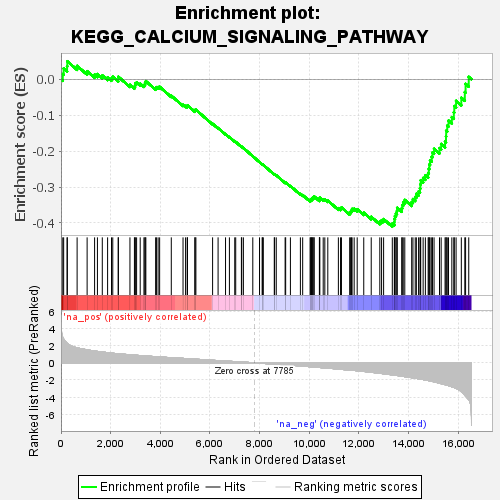

| | | Dataset | all_genes |
| Phenotype | NoPhenotypeAvailable |
| Upregulated in class | na_neg |
| GeneSet | KEGG_CALCIUM_SIGNALING_PATHWAY |
| Enrichment Score (ES) | -0.41046047 |
| Normalized Enrichment Score (NES) | -1.4809517 |
| Nominal p-value | 0.0031347962 |
| FDR q-value | 0.44532868 |
| FWER p-Value | 1.0 |
Table: GSEA Results Summary

Fig 1: Enrichment plot: KEGG_CALCIUM_SIGNALING_PATHWAY
Profile of the Running ES Score & Positions of GeneSet Members on the Rank Ordered List
| SYMBOL | RANK IN GENE LIST | RANK METRIC SCORE | RUNNING ES | CORE ENRICHMENT | | 1 | PDGFRA | 72 | 2.971 | 0.0145 | No |
| 2 | HRH2 | 107 | 2.783 | 0.0302 | No |
| 3 | ADCY2 | 245 | 2.278 | 0.0364 | No |
| 4 | PHKB | 255 | 2.240 | 0.0501 | No |
| 5 | PDE1C | 649 | 1.751 | 0.0373 | No |
| 6 | F2R | 1052 | 1.510 | 0.0224 | No |
| 7 | PRKACB | 1353 | 1.381 | 0.0130 | No |
| 8 | CD38 | 1467 | 1.333 | 0.0146 | No |
| 9 | CACNA1G | 1663 | 1.268 | 0.0108 | No |
| 10 | SLC25A4 | 1877 | 1.190 | 0.0054 | No |
| 11 | PLCE1 | 2034 | 1.138 | 0.0031 | No |
| 12 | PHKG1 | 2085 | 1.119 | 0.0072 | No |
| 13 | CALM1 | 2307 | 1.053 | 0.0004 | No |
| 14 | GNAQ | 2308 | 1.053 | 0.0071 | No |
| 15 | ERBB3 | 2777 | 0.938 | -0.0154 | No |
| 16 | PPP3CC | 2957 | 0.901 | -0.0206 | No |
| 17 | CACNA1C | 2982 | 0.896 | -0.0163 | No |
| 18 | CALM3 | 2991 | 0.895 | -0.0111 | No |
| 19 | PRKCG | 3045 | 0.881 | -0.0087 | No |
| 20 | CAMK2D | 3190 | 0.846 | -0.0121 | No |
| 21 | VDAC3 | 3341 | 0.813 | -0.0161 | No |
| 22 | ITPR2 | 3382 | 0.807 | -0.0134 | No |
| 23 | PPP3R1 | 3389 | 0.805 | -0.0086 | No |
| 24 | PRKX | 3417 | 0.798 | -0.0052 | No |
| 25 | CALM2 | 3812 | 0.716 | -0.0246 | No |
| 26 | PPID | 3843 | 0.708 | -0.0220 | No |
| 27 | GRPR | 3911 | 0.696 | -0.0216 | No |
| 28 | RYR3 | 3973 | 0.685 | -0.0210 | No |
| 29 | PHKA1 | 4442 | 0.599 | -0.0457 | No |
| 30 | SLC8A1 | 4915 | 0.517 | -0.0711 | No |
| 31 | ERBB4 | 5018 | 0.500 | -0.0742 | No |
| 32 | ADCY7 | 5083 | 0.490 | -0.0749 | No |
| 33 | PHKA2 | 5094 | 0.489 | -0.0724 | No |
| 34 | PPP3CB | 5393 | 0.428 | -0.0879 | No |
| 35 | EGFR | 5398 | 0.427 | -0.0854 | No |
| 36 | PLCD4 | 5433 | 0.420 | -0.0848 | No |
| 37 | PRKCA | 6106 | 0.298 | -0.1239 | No |
| 38 | CHP1 | 6327 | 0.258 | -0.1356 | No |
| 39 | ERBB2 | 6627 | 0.205 | -0.1525 | No |
| 40 | ATP2B1 | 6783 | 0.181 | -0.1608 | No |
| 41 | TRPC1 | 6998 | 0.146 | -0.1730 | No |
| 42 | AGTR1 | 7037 | 0.139 | -0.1744 | No |
| 43 | SLC25A5 | 7266 | 0.098 | -0.1877 | No |
| 44 | ATP2A2 | 7279 | 0.096 | -0.1878 | No |
| 45 | HTR2A | 7346 | 0.084 | -0.1913 | No |
| 46 | PPP3CA | 7725 | 0.011 | -0.2142 | No |
| 47 | PLCD3 | 7996 | -0.034 | -0.2305 | No |
| 48 | CAMK2G | 8104 | -0.055 | -0.2367 | No |
| 49 | CHRM3 | 8112 | -0.057 | -0.2367 | No |
| 50 | ATP2B4 | 8149 | -0.063 | -0.2385 | No |
| 51 | GNA14 | 8590 | -0.147 | -0.2644 | No |
| 52 | PRKACA | 8603 | -0.149 | -0.2642 | No |
| 53 | GRIN2D | 8670 | -0.162 | -0.2672 | No |
| 54 | TACR1 | 9027 | -0.230 | -0.2874 | No |
| 55 | CHRM1 | 9049 | -0.235 | -0.2872 | No |
| 56 | VDAC2 | 9240 | -0.278 | -0.2970 | No |
| 57 | EDNRB | 9642 | -0.362 | -0.3191 | No |
| 58 | PTK2B | 9734 | -0.381 | -0.3223 | No |
| 59 | CAMK2A | 10039 | -0.449 | -0.3379 | No |
| 60 | ITPKB | 10041 | -0.449 | -0.3351 | No |
| 61 | PLCG1 | 10093 | -0.463 | -0.3353 | No |
| 62 | MYLK2 | 10095 | -0.463 | -0.3324 | No |
| 63 | P2RX4 | 10138 | -0.474 | -0.3319 | No |
| 64 | VDAC1 | 10142 | -0.474 | -0.3291 | No |
| 65 | ATP2B2 | 10188 | -0.484 | -0.3288 | No |
| 66 | OXTR | 10194 | -0.486 | -0.3260 | No |
| 67 | GNAS | 10408 | -0.537 | -0.3355 | No |
| 68 | CAMK2B | 10411 | -0.537 | -0.3322 | No |
| 69 | GNA11 | 10425 | -0.542 | -0.3296 | No |
| 70 | ADCY3 | 10561 | -0.577 | -0.3341 | No |
| 71 | SLC25A6 | 10626 | -0.590 | -0.3343 | No |
| 72 | HRH1 | 10746 | -0.615 | -0.3376 | No |
| 73 | CACNA1H | 11172 | -0.726 | -0.3589 | No |
| 74 | ADORA2A | 11259 | -0.749 | -0.3593 | No |
| 75 | SLC8A2 | 11296 | -0.760 | -0.3567 | No |
| 76 | CHRNA7 | 11627 | -0.839 | -0.3715 | No |
| 77 | SPHK2 | 11665 | -0.847 | -0.3683 | No |
| 78 | GNAL | 11699 | -0.855 | -0.3649 | No |
| 79 | P2RX7 | 11724 | -0.864 | -0.3608 | No |
| 80 | ADRA1A | 11808 | -0.886 | -0.3602 | No |
| 81 | ADRB1 | 11930 | -0.919 | -0.3618 | No |
| 82 | GRM5 | 12194 | -0.996 | -0.3714 | No |
| 83 | GRIN2A | 12495 | -1.097 | -0.3827 | No |
| 84 | MYLK3 | 12841 | -1.218 | -0.3960 | No |
| 85 | SLC8A3 | 12912 | -1.242 | -0.3924 | No |
| 86 | TNNC2 | 12994 | -1.273 | -0.3892 | No |
| 87 | PDGFRB | 13344 | -1.402 | -0.4015 | Yes |
| 88 | CACNA1E | 13427 | -1.430 | -0.3974 | Yes |
| 89 | P2RX6 | 13430 | -1.430 | -0.3884 | Yes |
| 90 | NTSR1 | 13451 | -1.437 | -0.3805 | Yes |
| 91 | ITPR1 | 13491 | -1.456 | -0.3736 | Yes |
| 92 | ADCY1 | 13530 | -1.468 | -0.3665 | Yes |
| 93 | ADCY9 | 13541 | -1.478 | -0.3577 | Yes |
| 94 | CACNA1D | 13724 | -1.558 | -0.3589 | Yes |
| 95 | CACNA1I | 13745 | -1.567 | -0.3501 | Yes |
| 96 | PLCB3 | 13784 | -1.585 | -0.3423 | Yes |
| 97 | PHKG2 | 13847 | -1.610 | -0.3359 | Yes |
| 98 | LTB4R2 | 14125 | -1.733 | -0.3417 | Yes |
| 99 | ADRA1D | 14175 | -1.758 | -0.3335 | Yes |
| 100 | P2RX5 | 14267 | -1.796 | -0.3276 | Yes |
| 101 | PLN | 14313 | -1.820 | -0.3187 | Yes |
| 102 | AVPR1A | 14402 | -1.861 | -0.3122 | Yes |
| 103 | PLCD1 | 14459 | -1.886 | -0.3036 | Yes |
| 104 | PTAFR | 14476 | -1.894 | -0.2925 | Yes |
| 105 | PRKCB | 14488 | -1.897 | -0.2811 | Yes |
| 106 | BST1 | 14586 | -1.946 | -0.2746 | Yes |
| 107 | PTGER1 | 14676 | -1.994 | -0.2673 | Yes |
| 108 | MYLK | 14788 | -2.060 | -0.2610 | Yes |
| 109 | HTR6 | 14814 | -2.076 | -0.2493 | Yes |
| 110 | GRM1 | 14835 | -2.091 | -0.2372 | Yes |
| 111 | CAMK4 | 14865 | -2.110 | -0.2255 | Yes |
| 112 | TBXA2R | 14931 | -2.155 | -0.2157 | Yes |
| 113 | PLCG2 | 14962 | -2.173 | -0.2037 | Yes |
| 114 | ATP2A1 | 15026 | -2.211 | -0.1934 | Yes |
| 115 | ITPR3 | 15245 | -2.379 | -0.1915 | Yes |
| 116 | CACNA1A | 15312 | -2.429 | -0.1801 | Yes |
| 117 | ADRA1B | 15469 | -2.545 | -0.1734 | Yes |
| 118 | BDKRB1 | 15507 | -2.576 | -0.1592 | Yes |
| 119 | ADCY8 | 15514 | -2.583 | -0.1431 | Yes |
| 120 | ATP2A3 | 15557 | -2.619 | -0.1290 | Yes |
| 121 | NOS2 | 15608 | -2.659 | -0.1151 | Yes |
| 122 | SPHK1 | 15742 | -2.798 | -0.1053 | Yes |
| 123 | EDNRA | 15822 | -2.873 | -0.0919 | Yes |
| 124 | NOS3 | 15841 | -2.889 | -0.0745 | Yes |
| 125 | PLCB1 | 15913 | -2.965 | -0.0600 | Yes |
| 126 | PLCB4 | 16124 | -3.367 | -0.0513 | Yes |
| 127 | ADORA2B | 16265 | -3.787 | -0.0357 | Yes |
| 128 | BDKRB2 | 16296 | -3.878 | -0.0128 | Yes |
| 129 | ITPKA | 16423 | -4.268 | 0.0067 | Yes |
Table: GSEA details [plain text format]
Fig 2: KEGG_CALCIUM_SIGNALING_PATHWAY: Random ES distribution
Gene set null distribution of ES for KEGG_CALCIUM_SIGNALING_PATHWAY